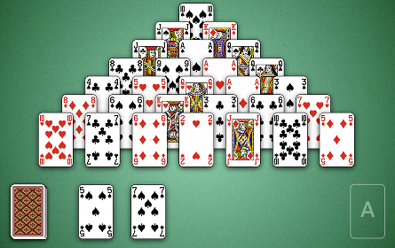
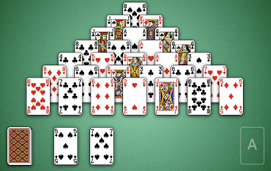

How to Play Pyramid
Game Setup
Pyramid: The Pyramid consists of the 7 rows of cards arranged in a pyramid shape in the center of the table.
Stock: The stock is the pile of face down cards in the bottom left corner of the board. When the player clicks on the stock, a face up card is dealt immediately to the right of the stock.
Waste: The waste is the pile of face up cards to the right of both the stock and the face up card.
Foundation: The foundation is the area in the bottom right hand corner of the table. Initially the foundation is empty, but as the game progresses the foundaion will be filled with cards from the pyramid and waste.

Stock: The stock is the pile of face down cards in the bottom left corner of the board. When the player clicks on the stock, a face up card is dealt immediately to the right of the stock.
Waste: The waste is the pile of face up cards to the right of both the stock and the face up card.
Foundation: The foundation is the area in the bottom right hand corner of the table. Initially the foundation is empty, but as the game progresses the foundaion will be filled with cards from the pyramid and waste.

Rules
Pyramid is played with a single deck of cards. The goal of the game is to place all the cards in the pyramid
into the foundation. Cards may be placed into the foundation in pairs summing to 13. A card is considered
"in play" if it was just dealt as a face up card from the stock, it is the top card in the waste
or it is a pyramid cards that is completely uncovered. Note that if a card is covered by a another card
that it could be paired with, it is still not in play (since it is covered) and the cards may not be paired.
Numbered cards are worth their face value and Ace = 1, Jack = 11, Queen = 12 and King = 13. Therefore, Kings don't need to be paired with any other card and can be immediately moved to the foundation once in play. The face up card may also be paired with the card on top of the waste for purposes of uncovering cards buried in the waste.
In the image above, we have a couple of options for moving the 6 of diamonds into the foundation. We may pair it with either the 7 of clubs (in the pyramid) or the 7 of spades (on top of the waste). Similarly, we may match the Jack of Diamonds with the 2 of Hearts. Cards are paired by dragging one on top of the other.
You may only make one pass through the stock.
Numbered cards are worth their face value and Ace = 1, Jack = 11, Queen = 12 and King = 13. Therefore, Kings don't need to be paired with any other card and can be immediately moved to the foundation once in play. The face up card may also be paired with the card on top of the waste for purposes of uncovering cards buried in the waste.
In the image above, we have a couple of options for moving the 6 of diamonds into the foundation. We may pair it with either the 7 of clubs (in the pyramid) or the 7 of spades (on top of the waste). Similarly, we may match the Jack of Diamonds with the 2 of Hearts. Cards are paired by dragging one on top of the other.
You may only make one pass through the stock.
Scoring
You begin the game with a score of 140 and 5 points are subtracted for every card removed from the pyramid.